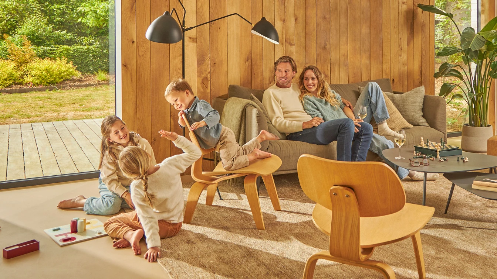

Waarop moet je letten bij het kiezen van een warmtepomp?
De perfecte airco vinden: wat zijn de aandachtspunten?
Op zoek naar een energiezuinige airco? Bij Daikin vind je airco’s met energielabel A++ tot A+++. Ze gebruiken tot wel 80% gratis energie uit de lucht en bieden zowel koeling als verwarming. Vergelijk modellen en ontdek welke airconditioning bij jouw woning past.

Luchtreiniger kiezen: waar moet je op letten?
Verbeter de luchtkwaliteit in je huis met een Daikin luchtreiniger. Deze helpt schadelijke stoffen, pollen en andere allergenen effectief te verwijderen. Lees hier waarop je moet letten bij het kiezen van een luchtreiniger.

Hoe werkt een warmtepomp?
Warmtepompen werken door warmte te verplaatsen van de ene plek naar de andere. Dat doen ze in drie stappen.
1. Warmte absorberen
Een koelmiddel in de buitenunit absorbeert warmte* uit de lucht, de bodem of het grondwater.
2. Compressie
Het koelmiddel wordt onder hoge druk gezet in de compressor, waardoor het nog veel warmer wordt.
3. Je woning verwarmen
De vrijgekomen warmte wordt via binnenunits je woning in geblazen of verwarmt het water dat door je radiatoren of vloerverwarming loopt. Sommige Daikin warmtepompen verwarmen ook het water voor je badkamer en keuken.
* Zelfs als het buiten vriest tot -20 graden, kan een warmtepomp je woning efficiënt verwarmen.